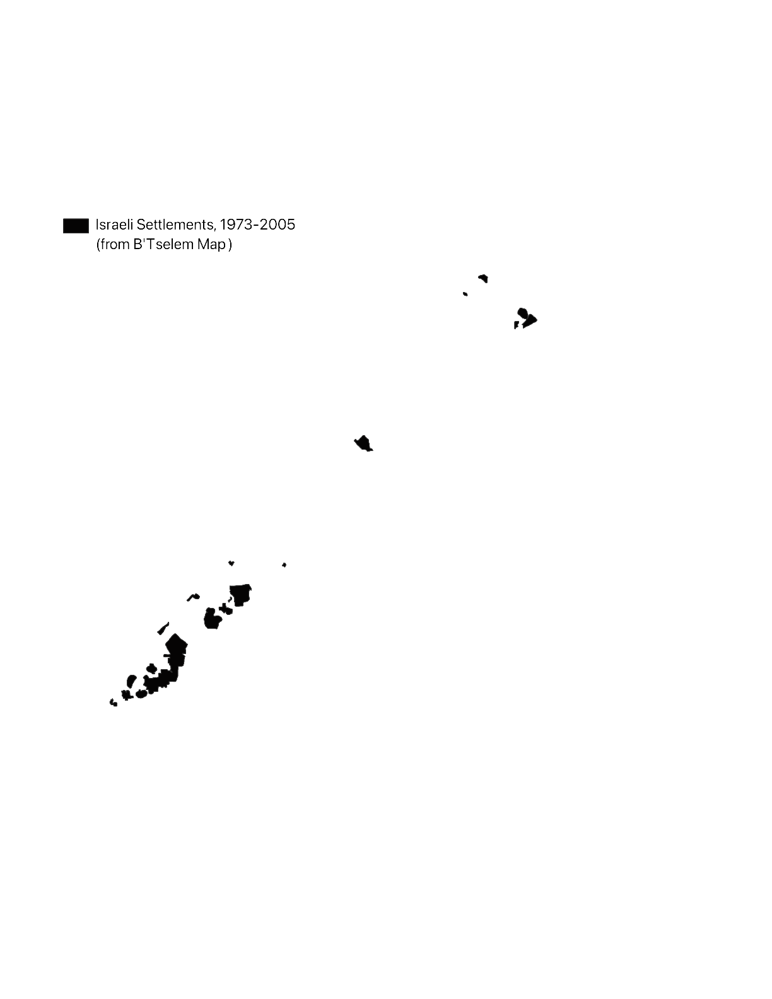
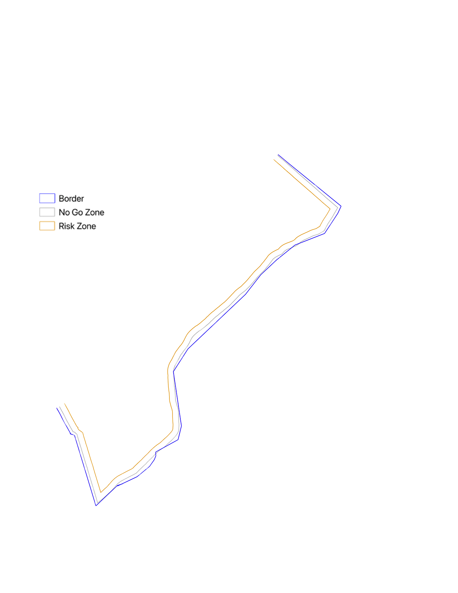
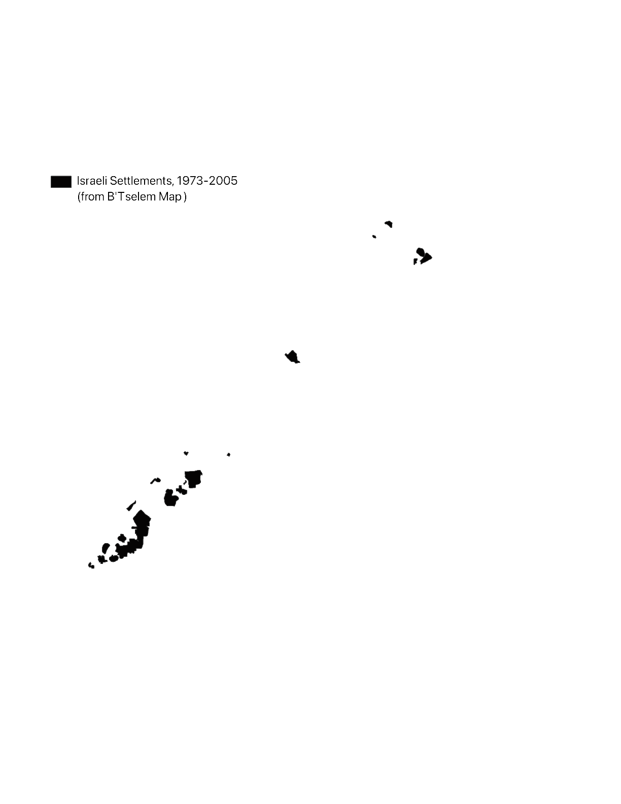
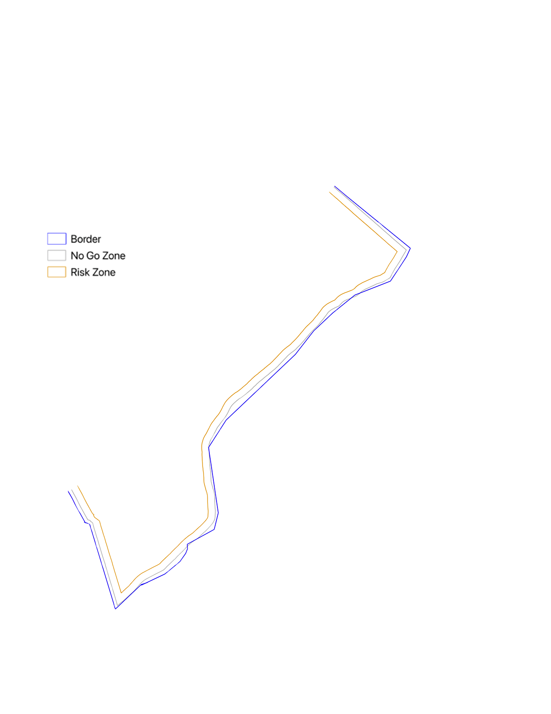

While my work this past semester has primarily concerned the distribution and management of sand dunes in the strip, I plan to develop my articulation of how military vision relates to sand and other topographical forms over the next few months.
The topography of the Gaza Strip is defined by three sandstone ridges and shifting dunes. These ridges, dating to the Pliocene-Pleistocene age, run parallel to the coastline and rise up to 110 meters above sea level. In the south of Gaza, where the coastal ridge is lowest, sand dunes gather and sprawl, and again in central and northern Gaza above Beit Lahiya.
As I have mapped through this Atlas and narrated through this video piece, the British Mandate was concerned with the encroachment of sand in Gaza in the 1920s and 30s, imposing a Sand Drift Ordinance to “arrest” the movement of the dunes. This entailed a massive afforestation project, forcing those living in Gaza City and Beit Lahiya to plant trees without pay, moreover making sandy land specifically vulnerable to expropriation by the state. Searching in vain for Biblical ruins along the coast, the British also concluded that these ruins had been covered by sand. Moving forward, I want to explore the relationship of sand to forms of visuality in archeological contexts, which have long been co-opted in Israeli national narratives and systemically targeted through bombing in Gaza. Simultaneously, in more recent years, softer, sandy soil has helped enable the building of tunnels and has obstructed their detection by the IDF’s radar systems. Along these lines, I am interested in exploring the subterranean as a site of resistance, as well as of obfuscated violence.
In the Atlas, I go on to trace the influence of sand on land use and colonization across scales. In the 1970s, Israel began to construct twenty one settlements throughout Gaza, all but one on the sites of the sand dunes. Simultaneously, the majority of Gazan farms developed in loess soil in the east. As the border of the strip became increasingly and violently enforced, it gained volume and width, encroaching over farmers’ lands—rendering entire sections inaccessible. In the 2010’s, plant heights in these areas were limited to 80 cm to maintain horizontal IDF sightlines into the strip and were routinely sprayed with herbicide. This disrupted local food systems, toxifying that year’s harvest and costing farmers tens of thousands of dollars. Part of my work for the coming semester will be to map the volumetric expansion of this borderland, viewing these plants’ biological reality as a sort of “sensor” of the border and as a material manifestation of military vision. I plan to continue experimenting with ways to express this dimensionality, along with mapping the testimonies of Gazan farmers collected by NGO B’tselem.
In the past two years, the IDF has damaged 95% of agricultural land, reforming it into military sites and razed earth berms. According to a report by Forensic Architecture, these berms not only help form the military architecture of the checkpoints now slicing through Gaza, but host cameras connected to facial recognition software developed by the Israeli company Cortex and Google Photos. As the earth below constitutes a scrambled archive, holding the traces of vegetation and toxins from munitions, the cameras and algorithmic networks positioned above are collecting data for prediction-based military models. These cameras are integrated into the violently disfigured topography of Gaza, creating new borders and operational points of horizontal military sight.
In the two months since the alleged ceasefire, the prehistoric ridges that formed the accumulation of the sand dunes have been weaponized as raised lookout points for Israeli military outposts. Moving forward, I aim to situate these instances of the material integration of topography and military sightlines in an extended historical lineage.
Over the next few months I plan to map and unentangle the processes I have begun to describe: the deep interconnectedness between land (re)formations and colonial military vision and violence. This will include cartographic and satellite image analyses, producing informed, speculative cross-sections of land and soil toxicity, visualizations of the plants’ heights and chemical conditions, and writing that explicates the IDF’s co-optation of geology and the role of sight in producing colonial futures. In preparation for this, I’ve been tagging and assembling my sources into a visual web database, allowing me to track the themes that appear across these references. I am also arranging conversations with a series of practitioners from different fields to flesh out the broad range of scales and disciplines I am working in, including an environmental scientist from UCSC to speak on the specificities of sand, soil, and geological influences, Nadia Abu El-Haj from Columbia’s Center for Palestine Studies for her expertise on the role of archeology in the Israeli national narrative, Shourideh Molavi, Professor of Anthropology and lead Palestine expert at Forensic Architecture for her work on herbicide spraying and border studies, and Palestinian architect and artist Dima Srouji, whose collaged video work and research into glass as artefact is deeply inspiring to me. I plan to develop this research into an exhibit by the end of next semester, drawing on the representational and presentational methods I’ve experimented with over the past few months, including collage, projection, and layering.
 


